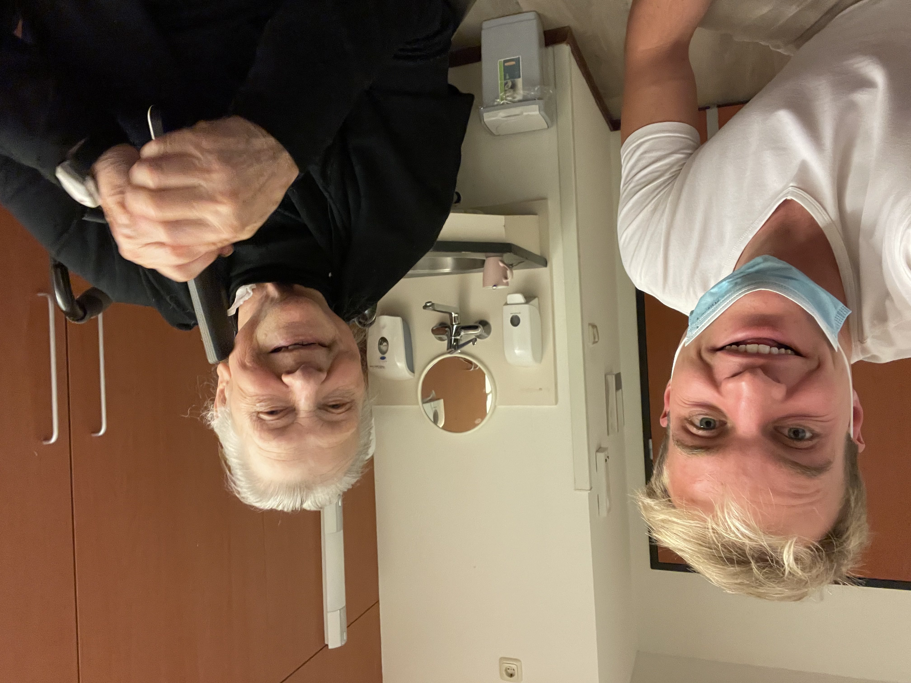

01 Een laatste groet
aan Vilente
Over de ervaringen bij Vilente.
Het verzorgingshuis in Wageningen waar ik
drie jaar met veel plezier heb mogen werken.

Tijdens mijn studententijd werd ik getipt voor een baantje als huiskamerhulp in verzorgingshuis voor ouderen Vilente op steenworp afstand van mijn studentenhuis in Wageningen. Hoewel mijn eerste ingeving was dat het een baantje was voornamelijk voor vrouwen, bleek het een schot in de roos. De baan was erg gunstig omdat ik er binnen 5 minuten kon zijn, altijd kon werken wanneer ik wilde en een leuke toeslag ontving in de weekenden. Het werk zelf was op mijn lijf geschreven. Ik hoefde geen zware zorgtaken te doen zoals het douchen van de mensen of helpen naar het toilet te gaan, maar zorgde in de woonkamer voor een lekkere maaltijd en voor een prettige sfeer. Ik zette een bewoner in de rolstoel en we liepen dan samen even langs mijn studenten huis om wat kruidenpotjes te halen voor de maaltijd. Tijdens mijn afstudeerscriptie was het een verademing om na een lange dag computeren even lekker onder de mensen te zijn en de taken uit te voeren die iedere dag nagenoeg gelijk waren. Het voelt als een voorrecht dat ik deze ouderen heb mogen verzorgen die zich in de laatste fase van hun leven begaven. De bewoners die ik op verzorgingshuis Vilente heb mogen leren kennen droegen zulke fascinerende verhalen met zich mee waarvan ik er een aantal graag wil uitlichten. Om de privacy van de bewoners te respecteren heb ik fictieve namen gebruikt.
 De bewoners vertelden mij over wat ze hadden meegemaakt waaronder
natuurlijk verhalen over de oorlog. Terwijl Nederland tijdens de tweede wereldoorlog bezet was door de Duitsers had Japan de
Nederlandse kolonie Nederlands-Indië, het huidige Indonesië ingenomen. Mevrouw Jansen zat in 1944 in een van die jappenkampen
en moest van het Japans gezag vliegen leren doodslaan om aan haar eten te komen. Mevrouw de Vries kon zich de bevrijding in 1945
nog goed herinneren. De Engelsen bombardeerden een brug bij Wijk bij Duurstede, in de buurt van Utrecht, wat vanuit haar slaapkamer
te horen was. Mevrouw Peters verloor haar broer die voor de Verenigde Naties als soldaat werd uitgezonden naar de oorlog in Korea
(1950-1953). Ze wees mij op een documentaire hierover ‘De laatste patrouille’.
De bewoners vertelden mij over wat ze hadden meegemaakt waaronder
natuurlijk verhalen over de oorlog. Terwijl Nederland tijdens de tweede wereldoorlog bezet was door de Duitsers had Japan de
Nederlandse kolonie Nederlands-Indië, het huidige Indonesië ingenomen. Mevrouw Jansen zat in 1944 in een van die jappenkampen
en moest van het Japans gezag vliegen leren doodslaan om aan haar eten te komen. Mevrouw de Vries kon zich de bevrijding in 1945
nog goed herinneren. De Engelsen bombardeerden een brug bij Wijk bij Duurstede, in de buurt van Utrecht, wat vanuit haar slaapkamer
te horen was. Mevrouw Peters verloor haar broer die voor de Verenigde Naties als soldaat werd uitgezonden naar de oorlog in Korea
(1950-1953). Ze wees mij op een documentaire hierover ‘De laatste patrouille’.
Soms ontstond er zelfs op hoge leeftijd nog een bijzondere nieuwe band. Een man een en een vrouw afkomstig uit Den Haag ontmoetten elkaar pas op Vilente en bleken onafscheidelijk. Maar er was ook een hele lieve vrouw die helaas nooit de liefde had gevonden. En ook de realiteit van overlijden maakte deel uit van het werk. Tijdens mijn dienst stierf de 103 jaar oude mevrouw de Jong. Haar dochter die geregeld op bezoek kwam was al op dusdanige leeftijd dat zelfstandig lopen voor haar al niet meer vanzelfsprekend was. Mevrouw Jansen kwam terug van het hospice naar Vilente omdat verwacht werd dat ze zou gaan overlijden maar dit niet gebeurde.
 Mevrouw van den Berg vertelde me dat ze op school van de
meester een tik op de vingers kreeg met de liniaal. Haar broertje had een hazenlip en werd hiermee notabene door de leerkracht
voor schut gezet waarop het gezin veranderde van school. Wanneer het lekker weer was nam ik een bewoner mee in de rolstoel
voor een wandelingetje langs de Wageningse uiterwaarden. Meneer Bakker riep dan als grap naar voorbijgangers ‘Aan de kant,
het intellect komt langs!’ En er was ook een verbijsterend grappige dementerende dame die keer op keer aan mij vroeg of ik
toevallig studeerde om dominee te worden. Of meneer de Boer die voor het eten soms opstond om te gaan speechen voor de hele
woning. Een verhaal ging rond over een Wagenings gezin met maar liefst 21 kinderen. Er gebeurde altijd wat, zoals een hele
avond samen liedjes zingen zoals bijvoorbeeld dit liedje van Benny Neyman.
Mevrouw van den Berg vertelde me dat ze op school van de
meester een tik op de vingers kreeg met de liniaal. Haar broertje had een hazenlip en werd hiermee notabene door de leerkracht
voor schut gezet waarop het gezin veranderde van school. Wanneer het lekker weer was nam ik een bewoner mee in de rolstoel
voor een wandelingetje langs de Wageningse uiterwaarden. Meneer Bakker riep dan als grap naar voorbijgangers ‘Aan de kant,
het intellect komt langs!’ En er was ook een verbijsterend grappige dementerende dame die keer op keer aan mij vroeg of ik
toevallig studeerde om dominee te worden. Of meneer de Boer die voor het eten soms opstond om te gaan speechen voor de hele
woning. Een verhaal ging rond over een Wagenings gezin met maar liefst 21 kinderen. Er gebeurde altijd wat, zoals een hele
avond samen liedjes zingen zoals bijvoorbeeld dit liedje van Benny Neyman.
Na vrijwel op alle woongroepen gewerkt te hebben kwam ik op het laatst wat vaker te werken op een benedenwoning waar geen dementerende ouderen woonden maar voornamelijk mensen met fysieke beperkingen. Toen het plan op tafel lag om als expat naar het buitenland te gaan, en ik hiervoor extra geld wilde sparen, ging ik steeds meer uren werken en hierdoor werd de band met de bewoners uiteraard hechter. Hier een extra zoetje, daar een beker karnemelk of een kopje thee zonder suiker maar wel met een lepeltje. Iedere bewoner met zijn of haar van huis uit meegebrachte gewoontes. Was het glas niet helemaal gevuld dan zei mevrouw Pul ‘Het is toch niet op de bon?’, zelfs die opmerkingen ben ik gaan missen. Wie mij altijd bij zal blijven is Mevrouw Jansen. Bij de koffieronde liep ik langs haar kamer en maakten we een praatje. Dat klikte altijd zo ontzettend goed. Ze was zo geduldig, bedachtzaam en wijs, altijd een luisterend oor en een heldere raad. Soms ging ik zelfs na werktijd nog naar haar toe om een praatje te maken. Haar kleinkinderen bezochten hun oma voor advies wanneer deze ze liefdesverdriet waren komen te zitten.
 Uitzonderlijk was de band met de Familie Visser, meneer met hele
authentieke maar stoffige kleren en mevrouw met haarband en Hollandse jurk. Vanwege hun beperkingen hadden ze het ‘geluk’ dat ze
in dezelfde woning geplaatst konden worden. De slaapkamers waren echter apart van elkaar. Meneer Visser wilde veel liever lekker
bij zijn vrouw slapen en dus glipte hij ‘s nachts uit zijn kamer om bij zijn vrouw te gaan liggen. Uiteindelijk besloten de
verzorgers de twee individuele kamers om te vormen naar één gedeelde slaapkamer en een woonkamer zodat ze samen konden slapen.
Iedere avond klokslag 8 uur trof ik ze in die woonkamer naast elkaar aan net gereed om een potje te gaan jokeren.
De klik tussen mij en dit echtpaar ontstond omdat ze net als ik in Australië waren geweest. Meneer Visser nodigde me uit om te
komen zitten op hun zelfgemaakte stoelen en we namen uitgebreid de tijd om de ervaringen in ‘Down under’ te bespreken. Tijdens
het gesprek deed Mevrouw Visser dan vaak ook een poging om mij proberen te koppelen aan een van de zusters die ze maar al te
goed in het vizier hield. Hun piepkleine kamer was prachtig ingericht met houten potten, oude klompen, een poppenhuis, fotolijstjes
en oud meubilair. Voordat het echtpaar Visser bij Vilente terecht gekomen was, hadden ze een oude boerderij in Amerongen.
Passerende fietsers kregen in hun achterhuis een kop thee aangeboden met een koek waarna bij het afrekenen werd gezegd
‘je mag geven wat je ervoor kan missen’. Een prachtig traditioneel eenvoudig bestaan, vol warmte en liefde, waar ik ontzettend
veel bewondering voor had.
Uitzonderlijk was de band met de Familie Visser, meneer met hele
authentieke maar stoffige kleren en mevrouw met haarband en Hollandse jurk. Vanwege hun beperkingen hadden ze het ‘geluk’ dat ze
in dezelfde woning geplaatst konden worden. De slaapkamers waren echter apart van elkaar. Meneer Visser wilde veel liever lekker
bij zijn vrouw slapen en dus glipte hij ‘s nachts uit zijn kamer om bij zijn vrouw te gaan liggen. Uiteindelijk besloten de
verzorgers de twee individuele kamers om te vormen naar één gedeelde slaapkamer en een woonkamer zodat ze samen konden slapen.
Iedere avond klokslag 8 uur trof ik ze in die woonkamer naast elkaar aan net gereed om een potje te gaan jokeren.
De klik tussen mij en dit echtpaar ontstond omdat ze net als ik in Australië waren geweest. Meneer Visser nodigde me uit om te
komen zitten op hun zelfgemaakte stoelen en we namen uitgebreid de tijd om de ervaringen in ‘Down under’ te bespreken. Tijdens
het gesprek deed Mevrouw Visser dan vaak ook een poging om mij proberen te koppelen aan een van de zusters die ze maar al te
goed in het vizier hield. Hun piepkleine kamer was prachtig ingericht met houten potten, oude klompen, een poppenhuis, fotolijstjes
en oud meubilair. Voordat het echtpaar Visser bij Vilente terecht gekomen was, hadden ze een oude boerderij in Amerongen.
Passerende fietsers kregen in hun achterhuis een kop thee aangeboden met een koek waarna bij het afrekenen werd gezegd
‘je mag geven wat je ervoor kan missen’. Een prachtig traditioneel eenvoudig bestaan, vol warmte en liefde, waar ik ontzettend
veel bewondering voor had.
Een paar weken voor mijn vertrek liep ik de woongroep binnen en zag ik tot mijn groot verdriet de condoleancekaart van mevrouw Visser. Ik schrok en even voelde het of mijn oma overleden was. Wat had deze vrouw een hart van goud. Meneer Visser was er natuurlijk kapot van en besloot terug te keren naar het verzorgingshuis in Amerongen. Een week later werden de kamers, die mij nog altijd deden herinneren aan de familie visser, weer door nieuwe bewoners bewoond, wat mij nogmaals deed beseffen hoe hard het leven kan zijn. Misschien was het juist een mooi moment om afscheid te nemen na drie mooie jaren. We namen een laatste groepsfoto met de hele woongroep waarna ik afscheid nam van bewoners en collega’s. Ik kreeg nog een lieve blik van mevrouw Jansen, die ik binnenkort een kaartje uit het buitenland zal sturen. Meneer de Groot, die het altijd geweldig vond wanneer hij even met een man kon sparren had speciaal gevraagd of hij mij nog even kon zien ‘Ga je Johan Cruijff opzoeken?’ vroeg hij mij en voegde eraan toe ‘We hadden vroegen een voetbal met veter, wanneer je precies op die veter kopte deed dat hartstikke veel pijn!’. Met opgeheven hoofd verliet ik Vilente, dankbaar voor deze mooie baan, de verhalen en levenslessen die mij altijd bij zullen blijven.